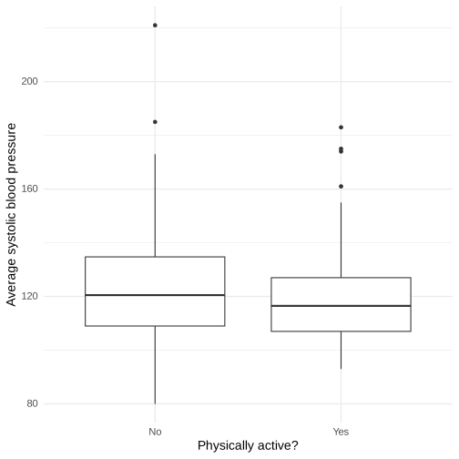

Chapter 9: Hypothesis testing
Contents
Chapter 9: Hypothesis testing#
library(tidyverse)
library(ggplot2)
library(cowplot)
set.seed(123456) # set random seed to exactly replicate results
library(knitr)
theme_set(theme_minimal(base_size = 14))
# load the NHANES data library
library(NHANES)
# drop duplicated IDs within the NHANES dataset
NHANES <-
NHANES %>%
dplyr::distinct(ID,.keep_all = TRUE)
NHANES_adult <-
NHANES %>%
drop_na(PhysActive,BMI, BPSysAve) %>%
subset(Age >= 18)
── Attaching packages ─────────────────────────────────────────────────────────────────────────────────────────────────────────────────────────────── tidyverse 1.3.2 ──
✔ ggplot2 3.4.1 ✔ purrr 1.0.1
✔ tibble 3.1.8 ✔ dplyr 1.1.0
✔ tidyr 1.3.0 ✔ stringr 1.5.0
✔ readr 2.1.4 ✔ forcats 1.0.0
── Conflicts ────────────────────────────────────────────────────────────────────────────────────────────────────────────────────────────────── tidyverse_conflicts() ──
✖ dplyr::filter() masks stats::filter()
✖ dplyr::lag() masks stats::lag()
Table 9.1#
# sample 250 adults from NHANES and compute mean BP separately for active
# and inactive individuals
sampSize <- 250
set.seed(12345)
NHANES_sample <-
NHANES_adult %>%
mutate(HealthGenNum=recode(HealthGen, 'Poor'=1, 'Fair'=2, 'Good'=3, 'Vgood'=4, 'Excellent'=5)) %>%
sample_n(sampSize)
sampleSummary <-
NHANES_sample %>%
group_by(PhysActive) %>%
summarize(
N = length(BPSysAve),
mean = mean(BPSysAve),
sd = sd(BPSysAve)
)
# calculate the mean difference in BP between active
# and inactive individuals; we'll use this later to calculate the t-statistic
meanDiff <-
sampleSummary %>%
select(
PhysActive,
mean
) %>%
spread(PhysActive, mean) %>%
mutate(
meanDiff = No - Yes
) %>%
pull(meanDiff)
# calculate the summed variances in BP for active
# and inactive individuals; we'll use this later to calculate the t-statistic
sumVariance <-
sampleSummary %>%
select(
PhysActive,
N,
sd
) %>%
gather(column, stat, N:sd) %>%
unite(temp, PhysActive, column) %>%
spread(temp, stat) %>%
mutate(
sumVariance = No_sd**2 / No_N + Yes_sd**2 / Yes_N
) %>%
pull(sumVariance)
s1 = sampleSummary$sd[1]
s2 = sampleSummary$sd[2]
n1 = sampleSummary$N[1]
n2 = sampleSummary$N[2]
welch_df = (s1/n1 + s2/n2)**2 / ((s1/n1)**2/(n1-1) + (s2/n2)**2/(n2-1))
# print sampleSummary table
kable(sampleSummary, digits=4,caption='Summary of blood pressure data for active versus inactive individuals')
Table: Summary of blood pressure data for active versus inactive individuals
|PhysActive | N| mean| sd|
|:----------|---:|--------:|-------:|
|No | 126| 123.8810| 20.8052|
|Yes | 124| 119.3226| 17.1486|
Figure 9.1#
ggplot(NHANES_sample,aes(PhysActive,BPSysAve)) +
geom_boxplot() +
xlab('Physically active?') +
ylab('Average systolic blood pressure')

Figure 9.2#
distDfNormal <- data.frame(x=seq(-4,4,0.01)) %>%
mutate(normal=dnorm(x), Distribution='Normal')
distDft4 <- data.frame(x=seq(-4,4,0.01)) %>%
mutate(normal=dt(x, df=4), Distribution='t (df=4)')
distDft1000 <- data.frame(x=seq(-4,4,0.01)) %>%
mutate(normal=dt(x, df=1000), Distribution='t (df=1000)')
legendsize=16
p1 <- ggplot(rbind(distDfNormal, distDft4),aes(x=x, y=normal, color=Distribution)) +
geom_line(aes(linetype=Distribution), linewidth=2) +
ggtitle('df = 4') +
ylab('density') +
ylim(0, 0.5) +
theme(text = element_text(size=14)) +
theme(legend.position=c(0.2, 0.8),
legend.title = element_text(size = legendsize),
legend.text = element_text(size = legendsize)
)
p2 <-ggplot(rbind(distDfNormal, distDft1000),aes(x=x, y=normal, color=Distribution)) +
geom_line(aes(linetype=Distribution), linewidth=2) +
ggtitle('df = 1000') +
ylab('density') +
ylim(0, 0.5) +
theme(text = element_text(size=14)) +
theme(legend.position=c(0.2, 0.8),
legend.title = element_text(size = legendsize),
legend.text = element_text(size = legendsize)
)
plot_grid(p1,p2)
Figure 9.3#
# simulate tossing of 100,000 flips of 100 coins to identify empirical
# probability of 70 or more heads out of 100 flips
# create function to toss coins
tossCoins <- function() {
flips <- runif(100) > 0.5
return(sum(flips))
}
# compute the probability of 69 or fewer heads, when P(heads)=0.5
p_lt_70 <- pbinom(69, 100, 0.5)
# the probability of 70 or more heads is simply the complement of p_lt_70
p_ge_70 <- 1 - p_lt_70
# use a large number of replications since this is fast
coinFlips <- replicate(100000, tossCoins())
p_ge_70_sim <- mean(coinFlips >= 70)
ggplot(data.frame(coinFlips),aes(coinFlips)) +
geom_histogram(binwidth = 1) +
geom_vline(xintercept = 70,color='red',linewidth=1)
Table 9.2#
# generate simulated data for squatting ability across football players
# and cross country runners
# reset random seed for this example
set.seed(1234)
# create a function to round values to nearest product of 5,
# to keep example simple
roundToNearest5 <- function(x, base = 5) {
return(base * round(x / base))
}
# create and show data frame containing simulated data
squatDf <- tibble(
group = as.factor(c(rep("FB", 5), rep("XC", 5))),
squat = roundToNearest5(c(rnorm(5) * 30 + 300, rnorm(5) * 30 + 140))
)
squatDf <- squatDf %>%
mutate(shuffledSquat = sample(squat))
kable(squatDf, caption='Squatting data for the two groups')
Table: Squatting data for the two groups
|group | squat| shuffledSquat|
|:-----|-----:|-------------:|
|FB | 265| 125|
|FB | 310| 230|
|FB | 335| 125|
|FB | 230| 315|
|FB | 315| 115|
|XC | 155| 335|
|XC | 125| 155|
|XC | 125| 125|
|XC | 125| 265|
|XC | 115| 310|
Figure 9.4#
p1 <- ggplot(squatDf,aes(x=group,y=squat)) +
geom_boxplot() +
ylab('max squat (lbs)')
# create a scrambled version of the group membership variable
p2 <- ggplot(squatDf,aes(x=group,y=shuffledSquat)) +
geom_boxplot() +
ylab('max squat (lbs)')
plot_grid(p1, p2)

Two-group t-test:#
# compute and print t statistic comparing two groups
tt <-
t.test(
squat ~ group,
data = squatDf,
alternative = "greater"
)
print(tt)
Welch Two Sample t-test
data: squat by group
t = 8.0055, df = 4.9964, p-value = 0.0002465
alternative hypothesis: true difference in means between group FB and group XC is greater than 0
95 percent confidence interval:
121.2168 Inf
sample estimates:
mean in group FB mean in group XC
291 129
Figure 9.5#
# shuffle data 10,000 times and compute distribution of t values
nRuns <- 10000
shuffleAndMeasure <- function(df) {
dfScram <-
df %>%
mutate(
squat = sample(squat)
)
tt <- t.test(
squat ~ group,
data = dfScram,
alternative = "greater",
var.equal = TRUE
)
return(tt$statistic)
}
shuffleDiff <- replicate(nRuns, shuffleAndMeasure(squatDf))
# compute p value using randomization
pvalRandomization <- mean(shuffleDiff >= tt$statistic)
ggplot(data.frame(shuffleDiff),aes(shuffleDiff)) +
geom_histogram(aes(y=after_stat(density)),bins=50, color='gray', fill='gray') +
geom_vline(xintercept = tt$statistic,color='red') +
xlab('t values after random shuffling') +
stat_function(fun = dt, args = list(df = 8),n = 50,linewidth=1.5,linetype='dotted')
Figure 9.6#
# create function to shuffle BP data
shuffleBPstat <- function() {
bpDataShuffled <-
NHANES_sample %>%
select(BPSysAve, PhysActive) %>%
mutate(
BPSysAve = sample(BPSysAve)
)
# compute the difference
simResult <- t.test(
BPSysAve ~ PhysActive,
data = bpDataShuffled,
)
return(simResult$statistic)
}
# run function 5000 times and save output
nRuns <- 5000
meanDiffSimDf <-
data.frame(
meanDiffSim = replicate(nRuns, shuffleBPstat())
)
# compute the empirical probability of t values larger than observed
# value under the randomization null
bpTTest <-
t.test(
BPSysAve ~ PhysActive,
data = NHANES_sample,
alternative = "greater"
)
bpPvalRand <-
mean(meanDiffSimDf$meanDiffSim >= bpTTest$statistic)
meanDiffSimDf %>%
ggplot(aes(meanDiffSim)) +
geom_histogram(bins = 200) +
geom_vline(xintercept = bpTTest$statistic, color = "blue") +
xlab("T stat: BP difference between groups") +
geom_histogram(
data = meanDiffSimDf %>%
filter(meanDiffSim >= bpTTest$statistic),
aes(meanDiffSim),
bins = 200,
fill = "gray"
)
Figure 9.7#
# create simulated data for BP reduction trial
exerciseTrial <- function(nPerGroup, bpReduction = 1) {
# mean and SD on NHANES adult dataset
bp_mean <- mean(NHANES$BPSysAve, na.rm=TRUE)
bp_sd <- sd(NHANES$BPSysAve, na.rm=TRUE)
# create data
controlGroup <- rnorm(nPerGroup) * bp_sd + bp_mean
expGroup <- rnorm(nPerGroup) * bp_sd + bp_mean - bpReduction
ttResult <- t.test(expGroup, controlGroup)
return(c(
nPerGroup, bpReduction, ttResult$p.value,
diff(ttResult$estimate)
))
}
nRuns <- 1000
sampSizes <- 2**seq(5,17) # powers of 2
simResults <- c() ## create an empty list to add results onto
for (i in 1:length(sampSizes)) {
tmpResults <- replicate(
nRuns,
exerciseTrial(sampSizes[i], bpReduction = .5)
)
summaryResults <- c(
tmpResults[1, 1], tmpResults[2, 1],
sum(tmpResults[3, ] < 0.05),
mean(tmpResults[4, ])
)
simResults <- rbind(simResults, summaryResults)
}
simResultsDf <-
as_tibble(simResults) %>%
rename(
sampleSize = V1,
effectSizeLbs = V2,
nSigResults = V3,
meanEffect = V4
) %>%
mutate(pSigResult = nSigResults / nRuns)
ggplot(simResultsDf,aes(sampleSize,pSigResult)) +
geom_line() +
scale_x_continuous(trans='log2',breaks=simResultsDf$sampleSize) +
theme(axis.text.x = element_text( angle=45,vjust=0.5)) +
ylim(0,1) + ylab('Proportion of significant results') +
xlab('sample size per group') +
theme(panel.grid.major = element_line(colour = "gray",linewidth=0.25)) +
geom_hline(yintercept = 0.05,linetype='dashed')
Warning message:
“The `x` argument of `as_tibble.matrix()` must have unique column names if `.name_repair` is omitted as of tibble 2.0.0.
ℹ Using compatibility `.name_repair`.”
Figure 9.8#
set.seed(5)
# simulate 1500 studies with 10,000 tests each, thresholded at p < .05
nRuns <- 1000 # number of simulated studies to run
nTests <- 1000000 # number of simulated genes to test in each run
uncAlpha <- 0.05 # alpha level
uncOutcome <- replicate(nRuns, sum(rnorm(nTests) < qnorm(uncAlpha)))
#sprintf("mean proportion of significant tests per run: %0.2f", mean(uncOutcome) / nTests)
# compute proportion of studies with at least one false positive result,
# known as the familywise error rate
#sprintf("familywise error rate: %0.3f", mean(uncOutcome > 0))
# compute Bonferroni-corrected alpha
corAlpha <- 0.05 / nTests
corOutcome <- replicate(nRuns, sum(rnorm(nTests) < (qnorm(corAlpha))))
# sprintf("corrected familywise error rate: %0.3f", mean(corOutcome > 0))
p1 <- data.frame(nsig=uncOutcome) %>%
ggplot(aes(nsig)) +
geom_histogram(bins=50) +
xlab(sprintf('Number of significant results (out of %d)',nTests)) +
theme(plot.margin = unit(c(0,1.5,0,0), "cm"))
p2 <- ggplot(data.frame(nsig=corOutcome),aes(nsig)) +
geom_histogram(bins=50) +
xlab(sprintf('Number of significant results (out of %d)',nTests)) +
theme(plot.margin = unit(c(0,1,0,0), "cm"))
plot_grid(p1, p2)